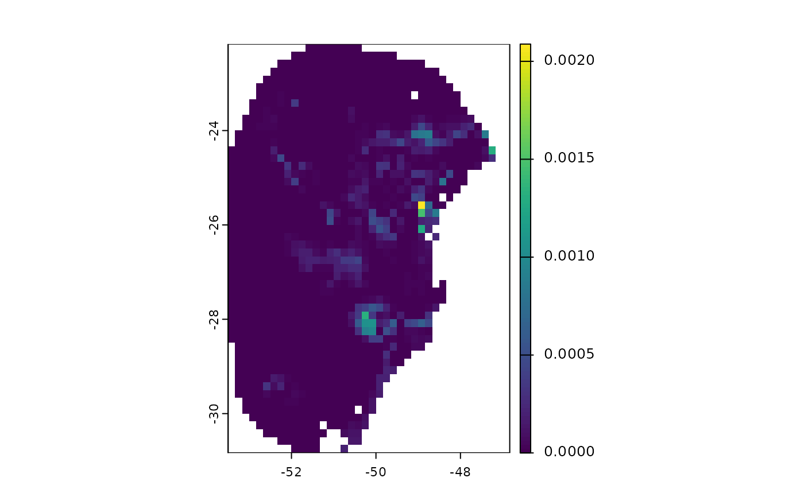

Explores variance coming from distinct sources in model predictions
projection_variability.RdCalculates variance in model predictions, distinguishing between the different sources of variation. Potential sources include replicates, model parameterizations, and general circulation models (GCMs).
Usage
projection_variability(model_projections, by_replicate = TRUE, by_gcm = TRUE,
by_model = TRUE, consensus = "median",
write_files = FALSE, output_dir = NULL,
return_rasters = TRUE, progress_bar = FALSE,
verbose = TRUE, overwrite = FALSE)Arguments
- model_projections
a
model_projectionsobject generated by theproject_selected() function. This object contains the file paths to the raster projection results and the thresholds used for binarizing the predictions.- by_replicate
(logical) whether to compute the variance originating from replicates.
- by_gcm
(logical) whether to compute the variance originating from general circulation models (GCMs)
- by_model
(logical) whether to compute the variance originating from model parameterizations.
- consensus
(character) (character) the consensus measure to use for calculating changes. Available options are 'mean', 'median', 'range', and 'stdev' (standard deviation). Default is 'median'.
- write_files
(logical) whether to write the raster files containing the computed variance to the disk. Default is FALSE.
- output_dir
(character) the directory path where the resulting raster files containing the computed changes will be saved. Only relevant if
write_results = TRUE.- return_rasters
(logical) whether to return a list containing all the SpatRasters with the computed changes. Default is TRUE. Setting this argument to FALSE returns a NULL object.
- progress_bar
(logical) whether to display a progress bar during processing. Default is TRUE.
- verbose
(logical) whether to display messages during processing. Default is TRUE.
- overwrite
whether to overwrite SpatRaster if they already exists. Only applicable if
write_filesis set to TRUE. Default is FALSE.
Value
An object of class variability_projections. If return_rasters = TRUE,
the function returns a list containing the SpatRasters with the computed
variances, categorized by replicate, model, and GCMs. If write_files = TRUE,
it also returns the directory path where the computed rasters were saved to
disk, and the object can then be used to import these files later with the
import_projections() function. If both return_rasters = FALSE and
write_files = FALSE, the function returns NULL
Examples
# Step 1: Organize variables for current projection
## Import current variables (used to fit models)
var <- terra::rast(system.file("extdata", "Current_variables.tif",
package = "kuenm2"))
## Create a folder in a temporary directory to copy the variables
out_dir_current <- file.path(tempdir(), "Current_raw5")
dir.create(out_dir_current, recursive = TRUE)
## Save current variables in temporary directory
terra::writeRaster(var, file.path(out_dir_current, "Variables.tif"))
# Step 2: Organize future climate variables (example with WorldClim)
## Directory containing the downloaded future climate variables (example)
in_dir <- system.file("extdata", package = "kuenm2")
## Create a folder in a temporary directory to copy the future variables
out_dir_future <- file.path(tempdir(), "Future_raw5")
## Organize and rename the future climate data (structured by year and GCM)
### 'SoilType' will be appended as a static variable in each scenario
organize_future_worldclim(input_dir = in_dir, output_dir = out_dir_future,
name_format = "bio_", fixed_variables = var$SoilType)
#>
|
| | 0%
|
|========= | 12%
|
|================== | 25%
|
|========================== | 38%
|
|=================================== | 50%
|
|============================================ | 62%
|
|==================================================== | 75%
|
|============================================================= | 88%
|
|======================================================================| 100%
#>
#> Variables successfully organized in directory:
#> /tmp/RtmppZ1hZC/Future_raw5
# Step 3: Prepare data to run multiple projections
## An example with maxnet models
## Import example of fitted_models (output of fit_selected())
data(fitted_model_maxnet, package = "kuenm2")
## Prepare projection data using fitted models to check variables
pr <- prepare_projection(models = fitted_model_maxnet,
present_dir = out_dir_current,
future_dir = out_dir_future,
future_period = c("2041-2060", "2081-2100"),
future_pscen = c("ssp126", "ssp585"),
future_gcm = c("ACCESS-CM2", "MIROC6"),
raster_pattern = ".tif*")
# Step 4: Run multiple model projections
## A folder to save projection results
out_dir <- file.path(tempdir(), "Projection_results/maxnet3")
dir.create(out_dir, recursive = TRUE)
## Project selected models to multiple scenarios
p <- project_selected(models = fitted_model_maxnet, projection_data = pr,
out_dir = out_dir)
#>
|
| | 0%
|
|======== | 11%
|
|================ | 22%
|
|======================= | 33%
|
|=============================== | 44%
|
|======================================= | 56%
|
|=============================================== | 67%
|
|====================================================== | 78%
|
|============================================================== | 89%
|
|======================================================================| 100%
# Step 5: Compute variance from distinct sources
v <- projection_variability(model_projections = p, by_replicate = FALSE)
#> Calculating variability from distinct models: scenario 1 of 5
#> Calculating variability from distinct models: scenario 2 of 5
#> Calculating variability from distinct GCMs: scenario 2 of 5
#> Calculating variability from distinct models: scenario 3 of 5
#> Calculating variability from distinct GCMs: scenario 3 of 5
#> Calculating variability from distinct models: scenario 4 of 5
#> Calculating variability from distinct GCMs: scenario 4 of 5
#> Calculating variability from distinct models: scenario 5 of 5
#> Calculating variability from distinct GCMs: scenario 5 of 5
#terra::plot(v$Present$by_rep) # Variance from replicates, present projection
terra::plot(v$Present$by_model) # From models

#terra::plot(v$`Future_2041-2060_ssp126`$by_rep) # From replicates future projection
terra::plot(v$`Future_2041-2060_ssp126`$by_model) # From models
 terra::plot(v$`Future_2041-2060_ssp126`$by_gcm) # From GCMs
terra::plot(v$`Future_2041-2060_ssp126`$by_gcm) # From GCMs